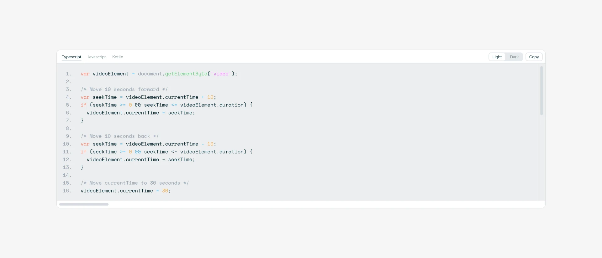
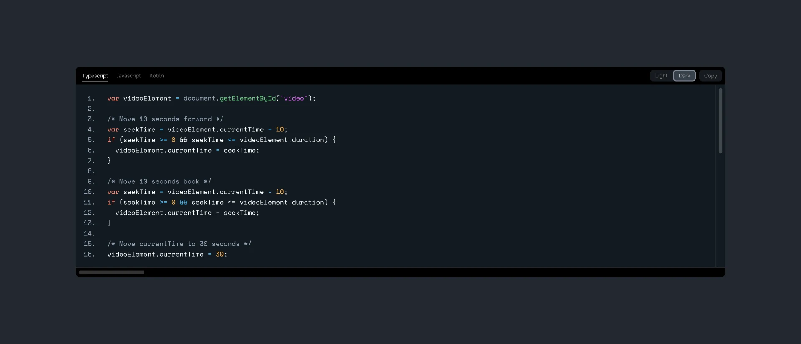
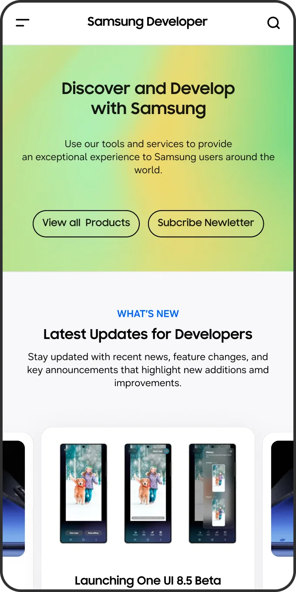
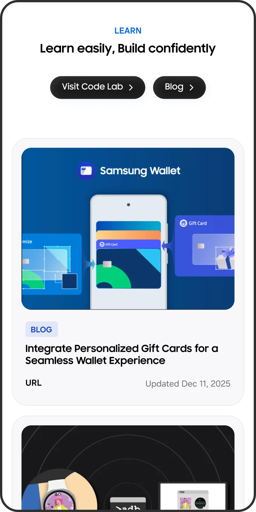
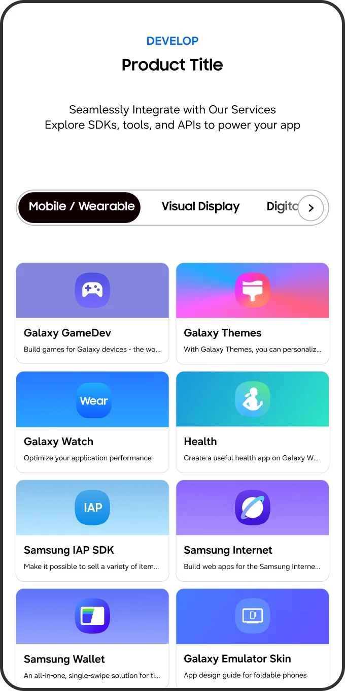
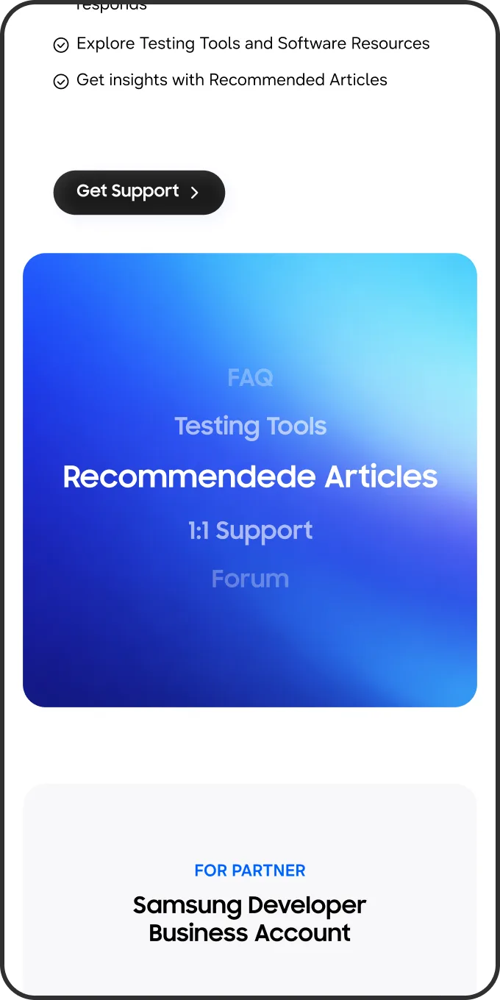
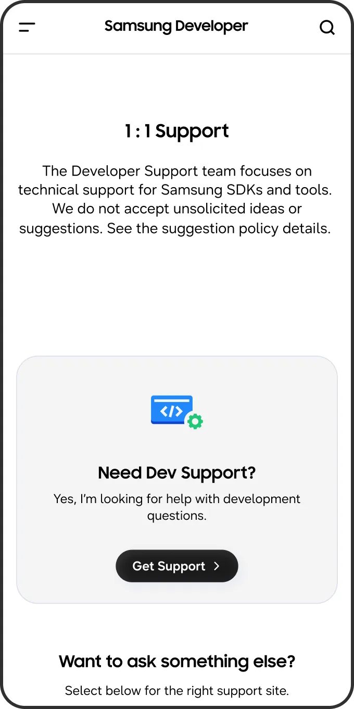
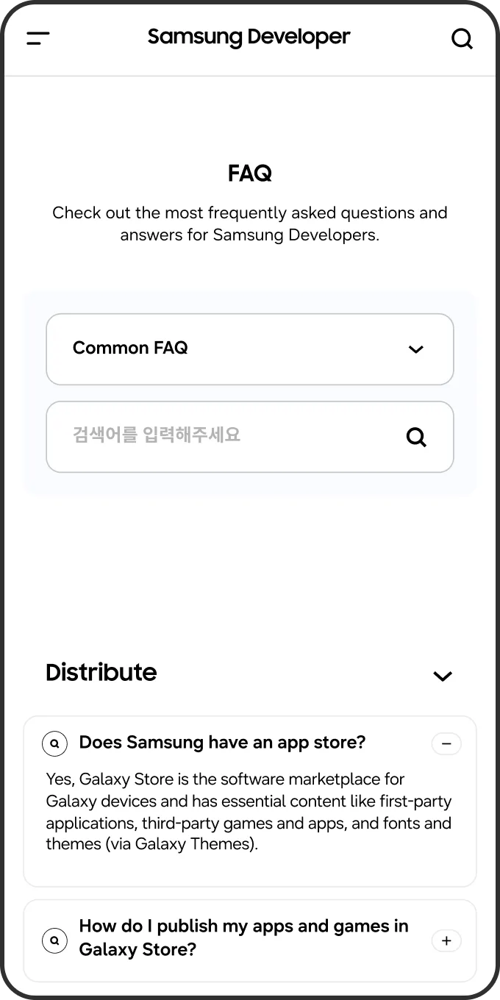
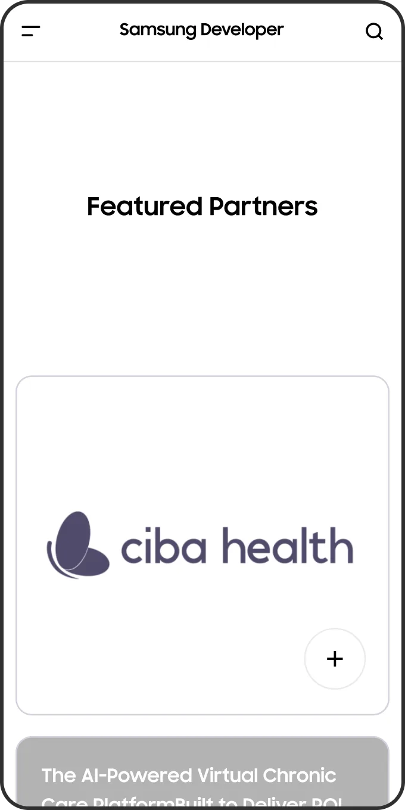
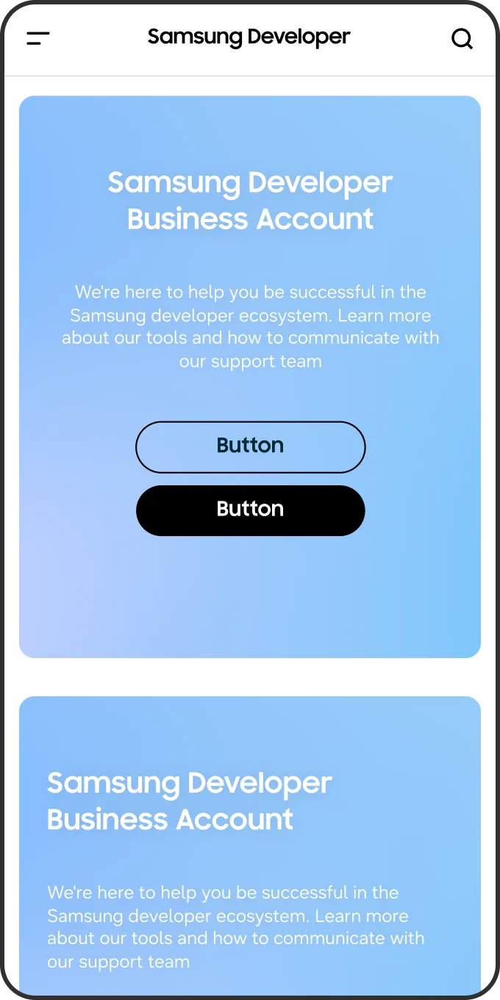

Developer Platform
Renewal Project
Designing a Better
Developer Experience
Samsung Developer Platform(SDP)은 개발자를 위한 서비스와 리소스를 하나의 경험으로 잇는 플랫폼입니다.
PL2는 SDP의 UX/UI 리뉴얼을 맡아 정보 구조(IA)를 재정비하고 컴포넌트 기반의 디자인 시스템을 정리했습니다.
서비스마다 다른 특성은 살리면서도 어디서든 같은 흐름으로 쓸 수 있는 환경을 완성했습니다.Samsung Developer Platform(SDP)은
개발자를 위한 서비스와 리소스를
하나의 경험으로 잇는 플랫폼입니다.
PL2는 SDP의 UX/UI 리뉴얼을 맡아
정보 구조(IA)를 재정비하고
컴포넌트 기반 디자인 시스템을 정리했습니다.
서비스마다 다른 특성은 살리면서도
어디서든 같은 흐름으로 쓸 수 있는
환경을 완성했습니다.Samsung Developer Platform (SDP)
brings services and resources
for developers into one experience.
PL2 led the UX/UI renewal,
restructuring the IA and
streamlining a component-based
design system.
Each service keeps
its own character, while developers
enjoy a familiar flow throughout.
One Platform, Multiple Services
Main은 처음 접속한 사용자가 갈 길을 한눈에 알 수 있도록 시각적
동선과 GNB를 재구성하고,
Forum과 Support는 복잡했던 구조와
가독성을 정리해 필요한 정보를 제때 찾을 수 있게 디자인했습니다.We rebuilt Main’s visual flow and GNB so first-time users instantly know where to go,
and redesigned Forum and Support to help developers find the right answers quickly.


Creating a Scalable Design System
플랫폼 어디서나 같은 기준이 적용되도록 SDP 디자인 시스템을
구축했습니다.
One UI를 기반으로 컴포넌트, 아이콘, 배지,
컬러 시스템을 체계적으로 정리해,
서비스가 확장되더라도 흔들림 없는 사용자 경험을 유지할 수 있게 했습니다.We built the SDP design system so the same standards apply across the entire platform.
Based on One UI,
we organized components, icons, badges, and the color system,
keeping the user experience steady even as the platform’s services grow.




Supporting the Development Workflow
개발자가 필요한 기능을 더 쉽고 빠르게 쓸 수 있도록 주요 개발 도구의 경험을 개선했습니다.
Documentation은 정보 구조를 재정리하고
콘텐츠 흐름에 맞는 모션을 더했으며,
Remote Test Lab까지 하나의
인터페이스로 이어 개발 과정 전반의 사용성을 높였습니다.We improved key development tools so developers can get to what they need faster.
Documentation was restructured, with motion that follows the flow of its content,
and Remote Test Lab now shares the same interface, making the entire workflow smoother.
A Consistent Experience Across Every Screen
플랫폼의 경험은 하나의 화면에서 끝나지 않습니다.
데스크톱과 모바일 모두에 같은 디자인 원칙과 인터페이스를 적용해,
어떤 디바이스에서 접속하더라도 자연스럽게 이어지도록 완성했습니다.A platform experience doesn’t end on a single screen.
We applied the same design principles and interface across desktop and mobile,
so it flows seamlessly from one device to the next.











